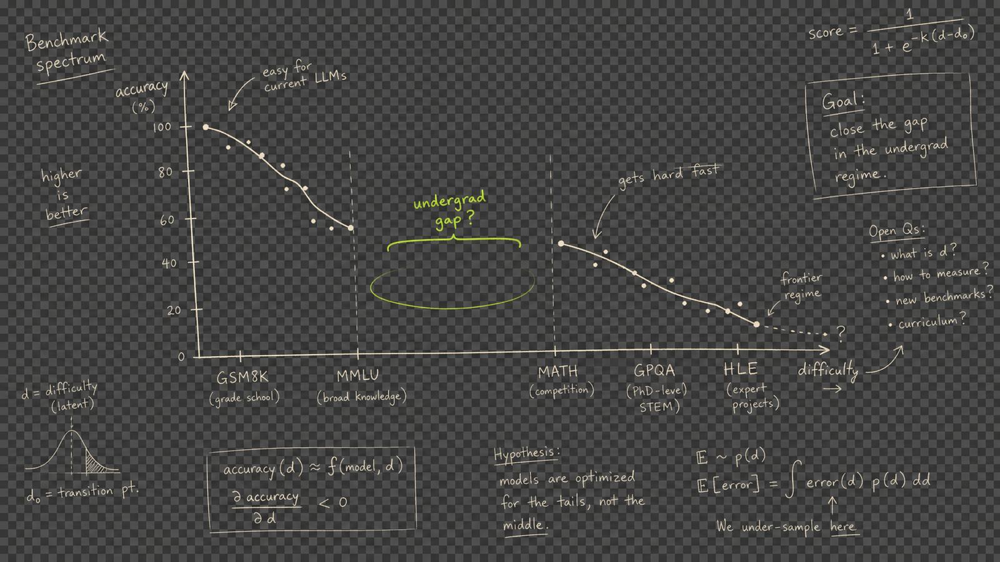
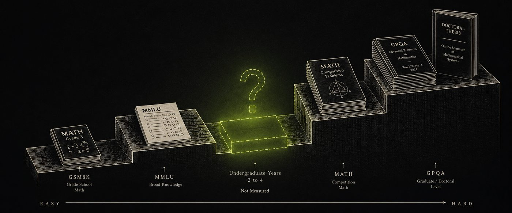
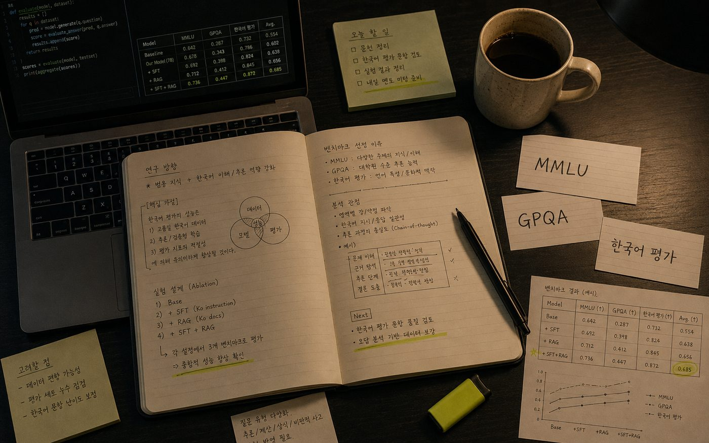

Student-Centered Evaluation
We measure not "how smart it is" but "how much it actually helps me."

An AI model benchmark built for Korean university students. We evaluate what existing benchmarks fail to measure — "does it actually help the student?" — and guide you toward the right cost · right performance AI for your situation.
§01 / Vision
Question · 01
Does this AI actually help with university-level assignments, projects, and papers?
Question · 02
Does this AI guide students well so they learn and grow on their own?
We measure not "how smart it is" but "how much it actually helps me."
The most expensive model isn't always the best. We find the optimal value for your situation.
We directly compare and expose the gap between public benchmark scores and real student experience.
The problems I struggled with become part of the benchmark — helping other students too.
We capture Korean academic writing style, Korean textbooks, and the way Korean students actually ask questions.
New problems flow in every semester — evolving with the times and curriculum.
§02 / Problem
On the difficulty spectrum, the "undergraduate years 2-4" segment is structurally empty. Between high school problems and PhD research — no one is measuring the actual learning reality of students.

The Missing Gap
An undergraduate-level benchmark does not exist.
Real assignments are essays, coding projects, and reports — yet benchmarks only test picking the right answer from four options.
Students want step-by-step solutions and explanations, but benchmarks call it done if the final answer is correct.
No benchmark measures Korean academic writing style or the context of Korean textbooks.
A correct answer ≠ a helpful answer. Explanatory power, references, and error acknowledgment — no one measures these.
§03 / Two Tracks
Student helpfulness is measured across two dimensions — Outcome and Process.
Real university assignment benchmark
"Can I actually use this AI for my assignments?"
Outcome-OrientedAI as a learning tutor benchmark
"Does this AI help me learn better?"
Process-Oriented§04 / Platform
SAM (Smart AI Multiplexer) is an AI routing platform developed by SoonsoonFactory (순순팩토리). Through a single API, it calls 30+ AI models — GPT, Claude, Gemini, DeepSeek, and more — automatically selecting the optimal model based on purpose, cost, and performance.
This project runs all benchmark evaluations through SAM. It enables submitting the same problem under identical conditions to multiple models simultaneously, then comparing and analyzing the results.
Visit SAM Platform ↗GPT · Claude · Gemini · DeepSeek · Kimi and more — all through one endpoint
Automatically selects the optimal model based on request type (coding · reasoning · creative) and budget
Continuously updated OVR · Chat · Code · Reason scores based on public benchmarks
Real-time comparison of per-model input/output token pricing — enabling budget-conscious choices for students
§05 / Verification
Through SoonsoonFactory's AI routing service SAM, we directly call and evaluate virtually every available AI API. SAM already maintains rankings based on public benchmarks — we measure the gap between those scores and what undergraduate students actually experience.
| # | Model | OVR | Chat | Code | Reason | Price / M tok |
|---|---|---|---|---|---|---|
| 01 | Claude Opus 4.7 | 94.0 | 95 | 96 | 93 | $5.5 / 27.5 |
| 02 | GPT-5.4 Pro | 92.7 | 94 | 94 | 96 | $15 / 120 |
| 04 | Gemini 3.1 Pro | 90.8 | 94 | 90 | 93 | $2 / 12 |
| 07 | Kimi K2.6 | 84.0 | 87 | 93 | 75 | $0.6 / 2.5 |
| 10 | DeepSeek V4 Flash | 72.7 | 77 | 78 | 65 | $0.14 / 0.28 |
| 12 | DeepSeek V3.2 | 68.6 | 72 | 73 | 61 | $0.62 / 1.85 |
Probe / 01
Is the model with OVR 94 really #1 for undergraduate assignments too?
Probe / 02
Isn't the $0.14 model good enough for simple assignments?
Probe / 03
Does a CODE score of 93 translate to equal performance on real undergraduate coding tasks?
Core Question
Which model is the best value for my specific situation?
§06 / Program

WE-Meet (위밋) is an industry-academia collaboration project where companies and universities partner so that students solve real industry problems, build practical skills, and earn academic credit.
§07 / Team
1 mentor + 2 student researchers. All records are public via GitHub issues and PRs. At cohort completion, the dataset and results will be published as an open benchmark.
 01/03 · MENTOR
01/03 · MENTOR
Drawing on experience in AI service development and operations, he provides students with practical, industry-perspective AI mentoring. He leads SAM platform development and oversees technical advisory and direction-setting for this project.
Responsible for benchmark research, execution script development, and coding category problem design.
Responsible for benchmark research, STEM problem design, and results analysis & visualization.